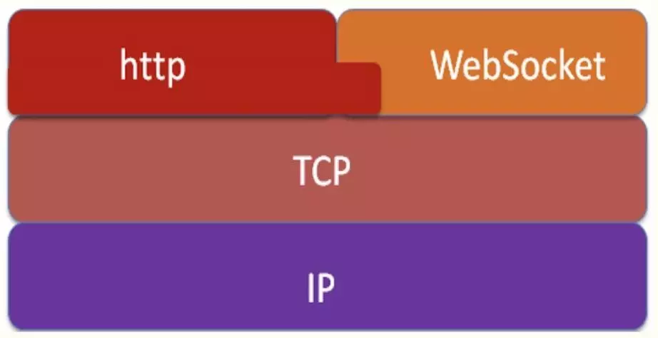

websocket 开发
Table of Contents
WebSocket是类似Socket的TCP长连接通讯模式。一旦WebSocket连接建立后，后续数据都以帧序列的形式传输。在客户端断开WebSocket连接或Server端中断连接前，不需要客户端和服务端重新发起连接请求。在海量并发及客户端与服务器交互负载流量大的情况下，极大的节省了网络带宽资源的消耗，有明显的性能优势，且客户端发送和接受消息是在同一个持久连接上发起，实时性优势明显。
WebSocket与HTTP轮询对比得出的结论：
WebSocket是真正的全双工方式，建立连接后客户端与服务器端是完全平等的，可以互相主动请求
而HTTP长连接基于HTTP，是传统的客户端对服务器发起请求的模式。
